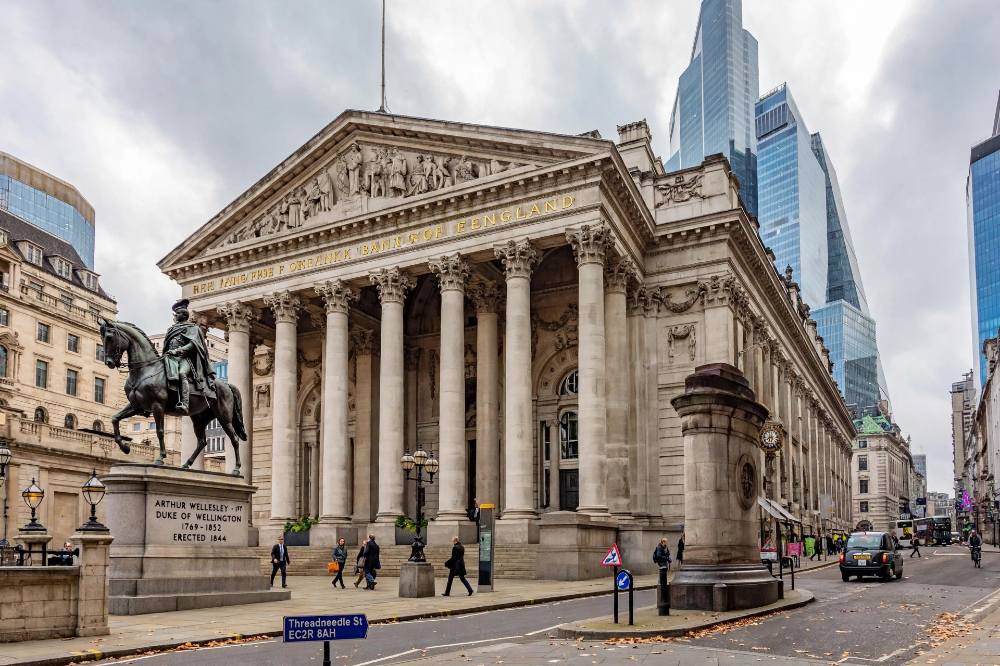

| Monetary Policy Committee | |
| Established | May 1997; statutory basis in the Bank of England Act 1998 |
|---|---|
| Members | 9 |
| Chair | Governor of the Bank of England |
| Main instrument | Bank Rate |
| Objective | Price stability: CPI inflation of 2 percent |
The Monetary Policy Committee (MPC) is the body within the Bank of England responsible for setting UK monetary policy. It was created in May 1997, when Chancellor of the Exchequer Gordon Brown granted the Bank operational independence over interest rates only days after Labour's general election victory, and was placed on a statutory footing by the Bank of England Act 1998. Before 1997, interest rates had been set by the Chancellor, advised by the Governor at regular "Ken and Eddie" meetings between Kenneth Clarke and Eddie George.
The Committee has nine members: the Governor of the Bank of England, who chairs it; three Deputy Governors (responsible for monetary policy, financial stability, and markets and banking); the Bank's Chief Economist; and four external members appointed by the Chancellor of the Exchequer for three-year terms, chosen for their economic expertise and intended to bring outside perspectives and challenge. A representative of HM Treasury attends as a non-voting observer.
The MPC's remit, set annually by the Chancellor, is to keep consumer price inflation at 2 percent; if inflation moves more than one percentage point away from target, the Governor must write a public letter to the Chancellor explaining why and what the Committee intends to do. Since 2016 the Committee has held eight scheduled meetings a year (previously monthly). Decisions on Bank Rate — and, since 2009, on quantitative easing through the Asset Purchase Facility — are taken by majority vote, with each member individually accountable and voting records published. Announcements are released at noon, accompanied by minutes and, quarterly, the Monetary Policy Report containing the Bank's forecasts.